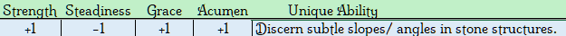

Deep in the hollowed-out mountains or fathomless caverns, the Laxen are observed hard at work, chipping away at ancient rock and precious ore alike. The isolated lifestyle of the dim has left them a rather unsociable bunch. A disposition a touch cold, much like the stone from which they harvest. When it comes to relations with the aboveground world, they leave it up to their off-shoot kin, the Murik. A far more suitable go-between, as the Laxen find themselves ill-equipped to handle the surface due to poorer eyesight. Though what they lack in standard, they make up for with the highly coveted and seldom-seen infrared and low-light vision.
No cultural titles of honor. Titles are given within the context of the game as needed. Just the given name then the family or bloodline they are from. Often a middle name is given.